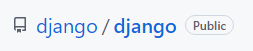

Flask 소개 (Intro)¶
Flask 초간단 소개¶
플라스크 둘러보기를 통해 개략적으로 Flask를 이해하는 시간을 갖도록 하겠습니다.
플라스크는 기본적으로 Python 언어를 사용한 웹 프레임워크입니다. Python 웹 프레임워크는 Django(장고)와 Flask(플라스크)가 있습니다. Flask는 마이크로 프레임워크를 지향하고 있습니다.
마아크로 프레임워크란?
마이크로 프레임워크 (Micro Framework)는 소규모 웹 애플리케이션 프레임워크를 가리키기 위한 용어입니다. 개발에 필요한 대부분의 기능을 미리 제공하는 풀 스택 프레임워크 (Full-stack Framework)와 대조되는 용어입니다. 마이크로 프레임워크는 개발자에게 핵심적으로 필요한 기능만 제공하고 나머지 부분들은 개발자의 몫으로 남겨둡니다. 다음과 같은 내용들은 제공되지 않기 때문에 개발자가 책임을 지고 구현해야 합니다.
계정, 인증, 인가, 역할 등
객체 지향 매핑을 통한 데이터베이스 추상화
입력 확인 및 입력 정제
웹 탬플릿 엔진
위와 같은 사항을 프레임워크가 지원하지 않으므로 개발자는 구현해도 되고 안해도 됩니다. 그만큼 구현해야 할 범위가 작아져서 빠르게 개발할 수 있습니다. 하지만 위 기능이 필요한 시스템이라면 개발자가 스스로 구현해야 합니다.
Flask와 Django는 다음과 같은 차이점이 있습니다. 우리는 Flask에 한정해서 공부해 볼 것입니다.
Framework |
Flask |
Django |
|---|---|---|
출시년도 |
2010 |
2005 |
ORM 지원 |
X |
O |
아키텍처 |
MSA(Micro Service Architecture) |
Monolithic |
지원기능 |
적음 |
많음 |
초기 학습량 |
적은 학습으로 사용 가능 |
상대적으로 배워야할 것이 많음 |
소스코드 양 |
코딩량이 상대적으로 적음 |
Flask보다 소스코드 크기가 큼(무거움) |
개발 자유도 |
높음 |
낮음 |
개발자 책임 |
높음 |
낮음(프레임워크)에서 대부분 지원 |
ORM(Object Relational Mapping)은 프레임워크에서 데이터베이스를 객체로 관리할 수 있도록 지원하는 기능입니다. ORM을 사용하면 별도로 공부하지 않아도 편리하게 데이터베이스를 조작할 수 있습니다.
MSA와 Monolithic에 대한 구체적 설명은 여기를 참고하기 바랍니다.
어떤 프레임워크를 더 많이 쓸까요?¶
Django와 Flask의 인기는 github.com에서의 좋아요(스타) 숫자를 보면 대충 짐작할 수 있습니다. 아래 바로가기 또는 이미지를 클릭하여 해당 페이지로 가서 ‘Star’ 숫자를 확인해 보세요.
Django Github 바로가기:
